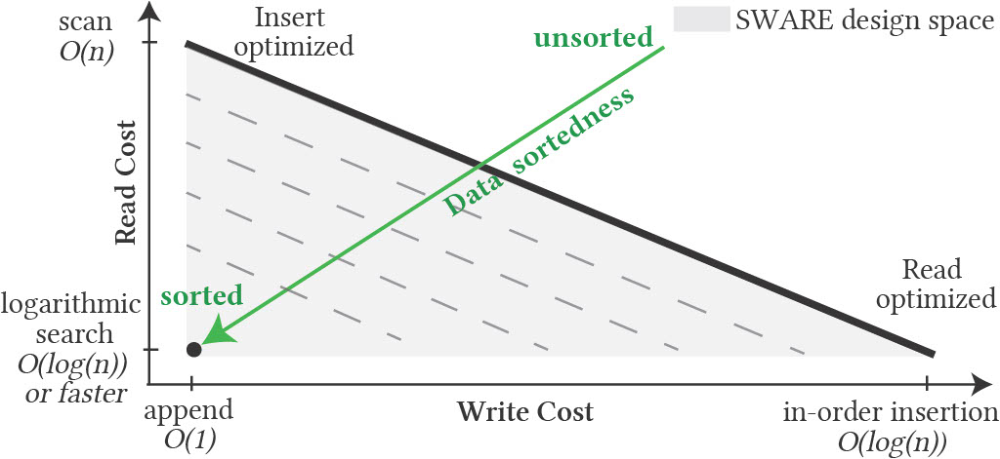
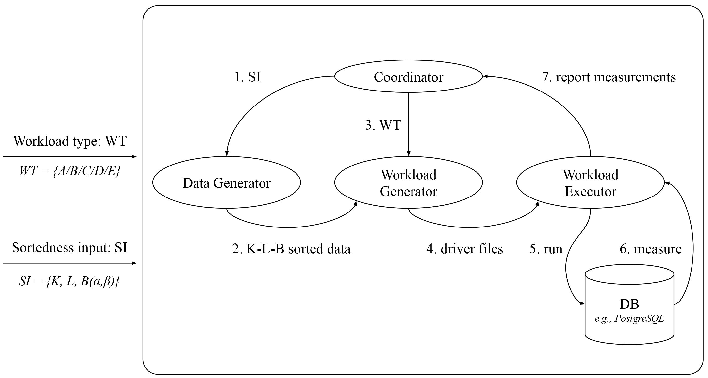

Current Projects
Sortedness-Aware Indexing


Indexing in data systems can be perceived as the process of adding structure to the incoming, otherwise unsorted data. If the data ingestion order matches the indexed attribute order, the indexing effort is redundant and can be avoided altogether. We identify sortedness as a resource that can accelerate index ingestion, and propose a new design paradigm that pays less indexing cost for near-sorted data.
BoDS: A Benchmark on Data Sortedness


Data systems and underlying indexes offer favorable ingestion (and query) performance for only the two extremes of data sortedness - unsorted data or fully sorted data. In practice, data may arrive with intermediate sortedness and the intuition is that index construction should be cheaper. However, there is a need for a framework to explore how index designs may be able to exploit pre-existing sortedness during data ingestion. BoDS highlights the performance of data systems in terms of index construction and navigation costs when operating on data ingested with variable sortedness.
Local PDF | Source Code | Presentation Video